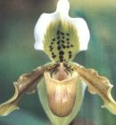

เมนู |

รองเท้านารีเหลืองกระบี่ ค้นพบเมื่อปี พ.ศ. 2435 ถิ่นกำเนิดอยู่แถบเกาะพงันจังหวัดสุราษฎร์ธานี เกาะพังงา และจังหวัดชุมพร ลักษณะเด่นของกล้วยไม้พันธุ์นี้ คือ มีใบสีเขียวไม่มีลาย ใบแคบและหนา ผิวเป็นมัน เส้นกลางใบเป็นรอยลึกรูปตัววี ก้านดอกแข็ง ดอกใหญ่ กลีบดอกนอกบนเป็นรูปใบโพธิ์กว้าง สอบตรงปลาย กลีบดอกสีขางไล่จากโคนกลีบ แนวกลางของกลีบเป็นสีเหลืองอมเขียวประด้วยจุดสีม่วง กลีบในสีเหลืองแคบและยาวกว่ากลีบนอก กระเปาะสีเหลืองเป็นมัน |
| ประวัติกล้วยไม้ไทย | |
| รองเท้านารีอินทนนท์ | |
| รองเท้านารีเหลืองปราจีน | |
| รองเท้านารีเมืองกาญจน์ | |
| รองเท้านารีเหลืองตรัง | |
| รองเท้านารีอ่างทอง | |
| รองเท้านารีสุขะกุล | |
| รองเท้านารีเหลืองกระบี่ | |
| รองเท้านารีเหลืองพังงา | |
| รองเท้านารีคางกบ | |
| รองเท้านารีฝาหอย |